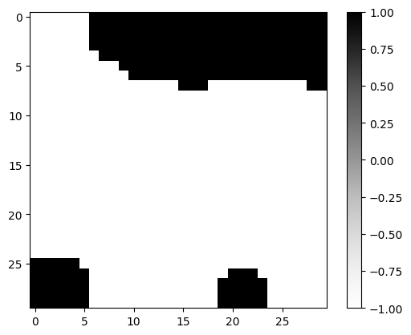
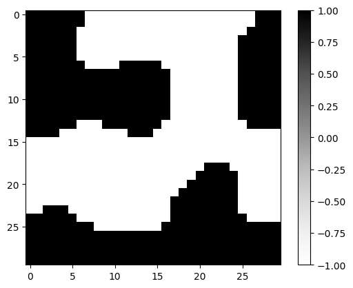
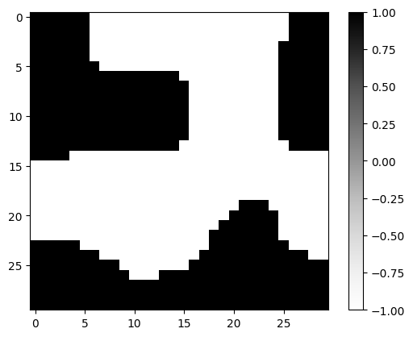

shape = (M, N) = (30, 30)Direct Optimization
Let’s leave the physics simulator out of it for now…
Data
target
Let’s - for now - just try to find a pre-defined design target (which we will construct with our generator)…
brush_target = notched_square_brush(5, 1)
latent_target = new_latent_design(shape, r=42)
latent_target_t = transform(latent_target, brush_target)
mask_target = generate_feasible_design_mask(latent_target_t, brush_target)
plt.imshow(mask_target, cmap="Greys")
plt.colorbar()
plt.show()No GPU/TPU found, falling back to CPU. (Set TF_CPP_MIN_LOG_LEVEL=0 and rerun for more info.)
input
brush_input = notched_square_brush(5, 1)
latent_input = new_latent_design(shape, r=0)
latent_input_t = transform(latent_input, brush_input)
mask_input = generate_feasible_design_mask(latent_input_t, brush_target)
plt.imshow(mask_input, cmap="Greys")
plt.colorbar()
plt.show()
Loss Functions
mse
mse (x, y)
huber_loss
huber_loss (x, y, delta=0.5)
Optimization
the loss function defines what we’re optimizing.
def forward(latent, brush):
latent_t = transform(latent, brush)
design_mask = generate_feasible_design_mask(latent_t, brush) # differentiable through STE
return design_mask
def loss_fn(latent, brush, target_mask):
design_mask = forward(latent, brush)
return huber_loss(design_mask, target_mask)
loss_fn(latent_input, brush_input, mask_target)Array(0.40687042, dtype=float32)using jax, it’s easy to get the gradient function.
grad_fn = jax.grad(loss_fn, argnums=0)let’s use an Adam optimizer
init_fn, update_fn, params_fn = adam(0.1)
state = init_fn(latent_input)this is the optimization step:
def step_fn(step, state, brush, mask_target):
latent = params_fn(state)
loss = loss_fn(latent, brush, mask_target)
grads = grad_fn(latent, brush, mask_target)
optim_state = update_fn(step, grads, state)
return loss, optim_statewe can now loop over the optimization:
range_ = trange(10) # reduced iterations, so that tests run faster
for step in range_:
loss, state = step_fn(step, state, brush_input, mask_target)
range_.set_postfix(loss=float(loss))
latent_input = params_fn(state)plt.imshow(mask_target, cmap="Greys", vmin=-1, vmax=1)
plt.colorbar()
plt.show()
plt.imshow(forward(latent_input, brush_input), cmap="Greys", vmin=-1, vmax=1)
plt.colorbar()
plt.show()
loss_fn(latent_input, brush_input, mask_target)Array(0.03643624, dtype=float32)